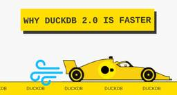
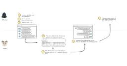

Hacker News: Front Page
フィード

Build your own decision model
Hacker News: Front Page
Article URL: https://nishtahir.com/build-your-own-decision-model/Comments URL: https://news.ycombinator.com/item?id=50037949Points: 5# Comments: 0
37分前
Hackers abuse Google Ads, Bing redirects to push Claude ClickFix attacks
Hacker News: Front Page
Article URL: https://www.bleepingcomputer.com/news/security/hackers-abuse-google-ads-bing-redirects-to-push-claude-clickfix-attacks/Comments URL: https://news.ycombinator.com/item?id=50037299Points: 23# Comments: 8
2時間前
A city-building game in which the city would prefer you didn't 1
1
Hacker News: Front Page
Article URL: https://housing.over.pizza/Comments URL: https://news.ycombinator.com/item?id=50036864Points: 91# Comments: 39
3時間前
Takeshi's Castle
Hacker News: Front Page
Article URL: https://en.wikipedia.org/wiki/Takeshi%27s_CastleComments URL: https://news.ycombinator.com/item?id=50036119Points: 85# Comments: 30
4時間前
Nvidia in talks to acquire US 'open' model startup Reflection AI
Hacker News: Front Page
Article URL: https://www.ft.com/content/052610c5-22b4-4dd4-932e-b7f9f0628b6aComments URL: https://news.ycombinator.com/item?id=50035886Points: 96# Comments: 62
5時間前

Why DuckDB 2.0 is faster
Hacker News: Front Page
Article URL: https://motherduck.com/blog/why-duckdb-20-is-faster/Comments URL: https://news.ycombinator.com/item?id=50035530Points: 109# Comments: 34
5時間前
MrBeast 'spends millions reverse engineering the algorithms on each platform'
Hacker News: Front Page
Article URL: https://www.barchart.com/story/news/5472260/mrbeast-told-billionaire-mark-cuban-he-spends-millions-of-dollars-reverse-engineering-the-algorithms-on-each-platform-so-he-never-runs-out-of-ideasComments URL: https://news.ycombinator.com/item?id=50034123Points: 31# Comments: 29
8時間前
Knuth reward check
Hacker News: Front Page
Article URL: https://www.thomas-huehn.com/knuth-reward-check/Comments URL: https://news.ycombinator.com/item?id=50034081Points: 127# Comments: 47
8時間前
Bitwarden Dual License Model
Hacker News: Front Page
Article URL: https://community.bitwarden.com/t/published-version-update-in-app-stores/102750Comments URL: https://news.ycombinator.com/item?id=50033407Points: 328# Comments: 240
9時間前

Unikernels were hard. key word: were
Hacker News: Front Page
Article URL: https://ghuntley.com/unikernels/Comments URL: https://news.ycombinator.com/item?id=50033357Points: 68# Comments: 31
9時間前
I would like the value of my home to rise, while my property taxes fall
Hacker News: Front Page
Article URL: https://conversableeconomist.com/2026/09/28/i-would-like-the-value-of-my-home-to-rise-while-my-property-taxes-fall/Comments URL: https://news.ycombinator.com/item?id=50032758Points: 193# Comments: 462
10時間前
Apple/macOS removed from official Unix registry 6
Hacker News: Front Page
Article URL: https://www.opengroup.org//openbrand/register/Comments URL: https://news.ycombinator.com/item?id=50031653Points: 232# Comments: 210
12時間前
Talorys – A self-hosted personal AI agent on Cloudflare's free tier 1
Hacker News: Front Page
Article URL: https://github.com/rociiu/talorysComments URL: https://news.ycombinator.com/item?id=50031614Points: 228# Comments: 114
13時間前
Food processing influences metabolism and brain activity
Hacker News: Front Page
Article URL: https://news.vt.edu/articles/2026/10/research_fralinbiomed_upfhutelin.htmlComments URL: https://news.ycombinator.com/item?id=50029830Points: 91# Comments: 76
18時間前
The Lightbulb Computer
Hacker News: Front Page
Article URL: https://lightbulbcomputer.com/Comments URL: https://news.ycombinator.com/item?id=50029487Points: 156# Comments: 38
19時間前

Telegram Desktop vulnerability allowed any user's file to be stolen
Hacker News: Front Page
Article URL: https://beaksec.github.io/posts/telegram-desktop-one-click-account-takeover/Comments URL: https://news.ycombinator.com/item?id=50029123Points: 397# Comments: 246
20時間前
REA Reverse – Engineer Anything 3
Hacker News: Front Page
Article URL: https://rea.tools/Comments URL: https://news.ycombinator.com/item?id=50028275Points: 672# Comments: 295
1日前
How strong is the strong interaction?
Hacker News: Front Page
Article URL: https://cerncourier.com/how-strong-is-the-strong-interaction/Comments URL: https://news.ycombinator.com/item?id=50028162Points: 41# Comments: 11
1日前
Recent AI models struggled to match a human algorithmic innovation
Hacker News: Front Page
Article URL: https://epoch.ai/publications/innovationevalComments URL: https://news.ycombinator.com/item?id=50027257Points: 62# Comments: 51
1日前
Rampart: Browser native on-device PII radaction 1
Hacker News: Front Page
Article URL: https://ndstudio.gov/posts/say-hello-to-rampartComments URL: https://news.ycombinator.com/item?id=50024242Points: 62# Comments: 28
1日前